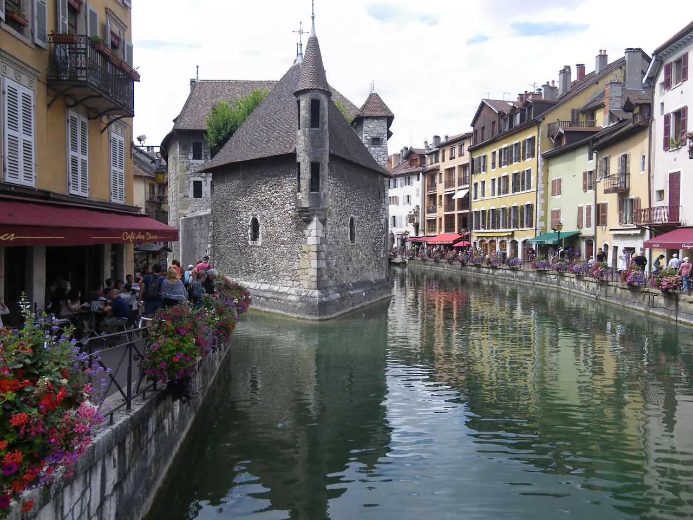
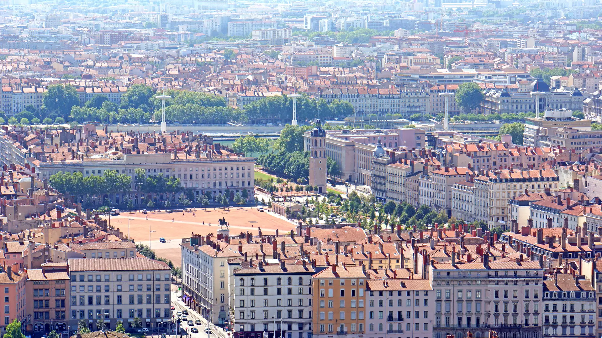
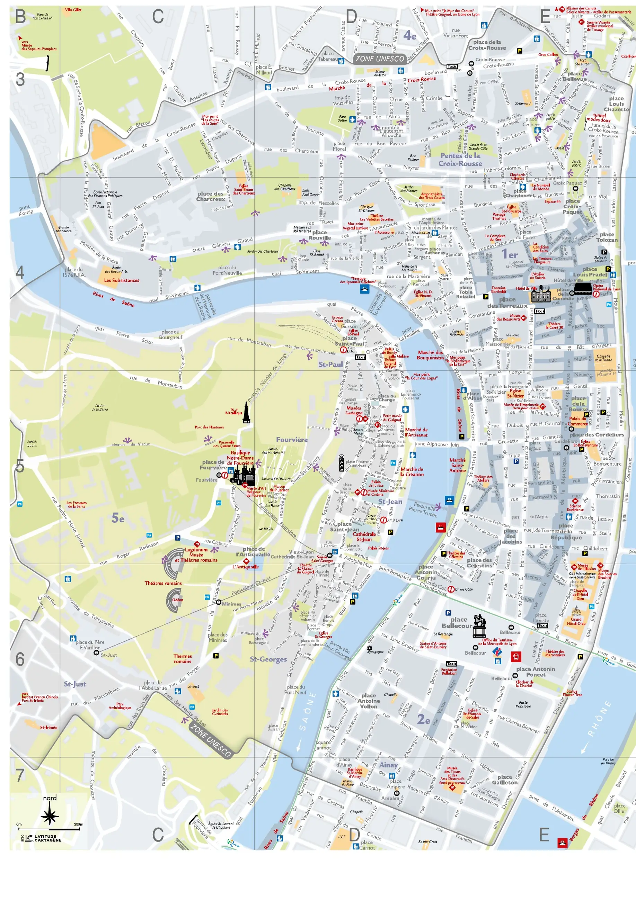
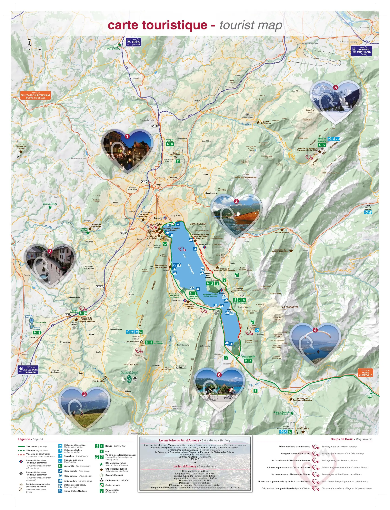
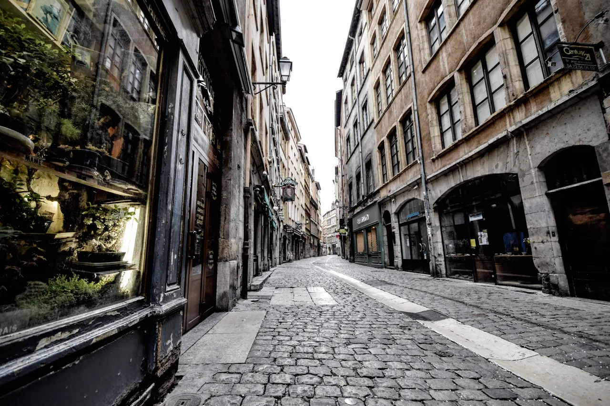
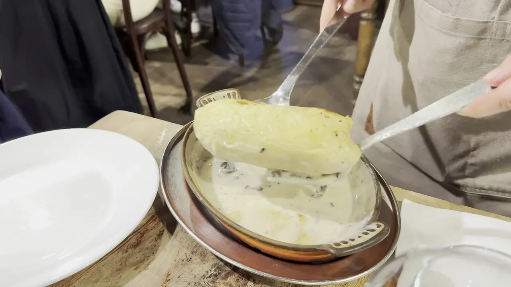
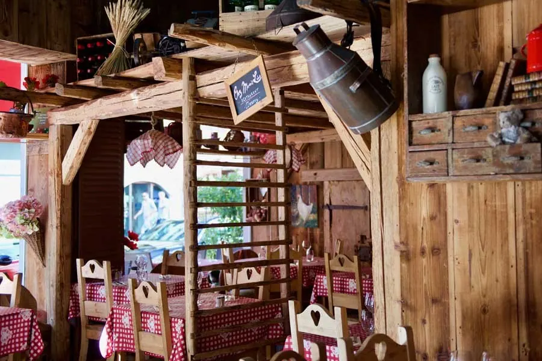
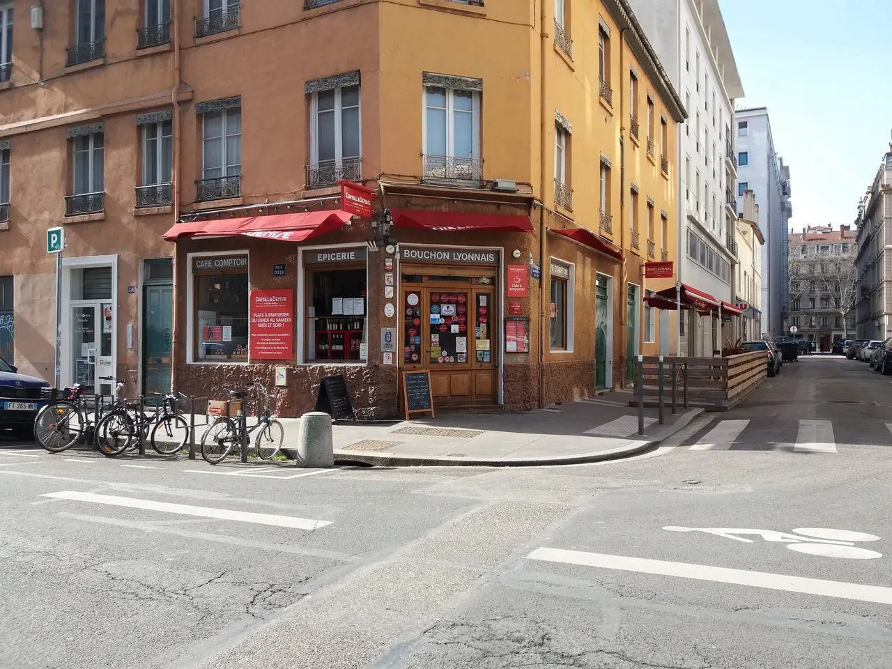
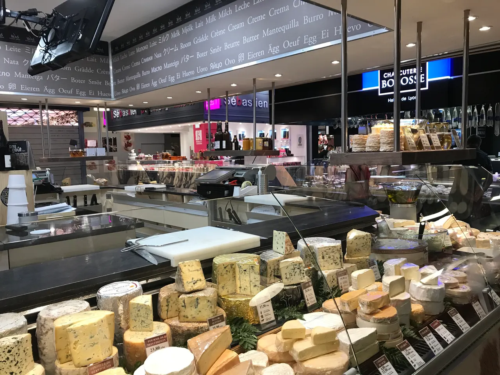

{kind=link}

Annecy 구시가지
알프스 만년설이 흘러드는 유럽에서 가장 투명한 안시 호수와 티우(Thiou) 운하를 품은 '알프스의 베네치아'. 12세기 수상 요새 팔레 드 릴(Palais de l'Île), 중세 안시 성채, 사랑의 다리(Pont des Amours).

Lyon에서는 두 강과 두 언덕이 만든 도시 지형을 따라 걷는다. Fourvière에서는 도시 전체를 내려다보고, Vieux Lyon에서는 르네상스 골목과 traboule을 지나며, Croix-Rousse에서는 비단 산업과 생활시장의 흔적을 본다.
도심 일정은 메트로와 도보로 연결하고, Halles de Lyon Paul Bocuse에서는 리옹의 음식문화를 재료와 시장의 관점에서 경험한다. 하루는 Annecy로 이동해 알프스 호수도시의 구시가지와 호숫가를 걷는다.
도시 안에서는 관광지를 많이 추가하기보다 서로 다른 동네의 성격을 연결해서 보는 데 시간을 쓴다.
| 날짜 | 핵심 일정 |
|---|---|
| 9/20 일 | Avignon 체크아웃 · TGV 이동 · Lyon Part-Dieu 도착 · 숙소 체크인 |
| 9/21 월 | Fourvière · Vieux Lyon 트라불 · 손강변 산책 |
| 9/22 화 | Croix-Rousse 시장 & 비단동네 · Halles Paul Bocuse · Parc de la Tête d'Or |
| 9/23 수 | Annecy 당일치기 (TER 이동) · 구시가지 & 안시 호수 |
| 9/24 목 | 숙소 체크아웃 · Part-Dieu역 이동 · Paris행 TGV 탑승 |
상세 시각, 메트로/철도 이동, 식사와 선택 일정은 각 날짜의 Day 페이지에서 확인한다.
현지 관광안내소가 종이로 나눠 주는 지도다. 목적지를 찍어 찾아가는 지도가 아니라, 이 고장에서 무엇이 유명하고 서로 얼마나 떨어져 있는지를 한눈에 보여 주는 쪽이다. 눌러서 크게 열면 확대된다 — 인터넷이 끊겨도 열린다.

유네스코 등재 구역 경계가 그려진 도심도. 푸르비에르 언덕·비외리옹·프레스킬·크루아루스가 두 강 사이에서 어떻게 배치되는지 본다. 원본은 광고가 둘린 접지라 지도 면만 잘라 세웠다.
저작권 · © ONLYLYON Tourisme et Congrès. All rights reserved. 권리자: ONLYLYON Tourisme et Congrès
공식 배포 파일에서 지도 면만 뽑아 해상도를 낮춰 비상업적 개인 여행 참고용으로 수록한다. 권리자·발행처·판본·원본 주소를 함께 표시하고, 요청이 있으면 내린다.

호수를 한 바퀴 도는 지도. 구시가와 성뿐 아니라 호수 건너편 마을까지 들어가고, «Coups de Cœur» 로 꼽은 일곱 곳이 표시돼 있어 하루를 어디까지 늘릴지 정할 수 있다.
저작권 · © Office de Tourisme (Apidae Tourisme 등록본). All rights reserved. 권리자: Office de Tourisme (Apidae Tourisme 등록본)
공식 배포 파일에서 지도 면만 뽑아 해상도를 낮춰 비상업적 개인 여행 참고용으로 수록한다. 권리자·발행처·판본·원본 주소를 함께 표시하고, 요청이 있으면 내린다.

알프스 만년설이 흘러드는 유럽에서 가장 투명한 안시 호수와 티우(Thiou) 운하를 품은 '알프스의 베네치아'. 12세기 수상 요새 팔레 드 릴(Palais de l'Île), 중세 안시 성채, 사랑의 다리(Pont des Amours).

19세기 리옹 비단 산업의 심장이자 '일하는 언덕'. 4m 높이 자카르(Jacquard) 직조기를 위해 설계된 층고 높은 카뉘 아파트, 1831년 노동자 봉기의 상징 6층 거대 계단 '쿠르 데 보라스(Cour des Voraces)', 크루아루스 대로 로컬 시장.

기원전 43년 로마 갈리아 수도 '루그두눔'이 시작된 발원지이자 리옹의 상징 '기도하는 언덕'. 기원전 15년 로마 대극장·오데옹과 19세기 비잔틴 모자이크 바실리카, 손강·프레스킬·알프스를 잇는 3단 대파노라마.

15~16세기 번영했던 유럽 최대 규모의 르네상스 건축 지구이자 유네스코 세계유산. 건물과 안뜰을 관통해 미로처럼 이어진 리옹 고유의 비밀 통로 '트라불(Traboules)'과 생장 대성당.

유럽 최대 규모의 순수 보행자 붉은 자갈 광장(6.2ha)이자 리옹 지리망의 원점(Point Zéro). 중앙의 루이 14세 기마상과 푸르비에르 언덕 조망, 남서쪽 생텍쥐페리와 어린 왕자 기념 동상.

1857년 조성된 117ha 면적의 프랑스 최대 도심 생태 공원. 16ha 인공 호수, 19세기 거대한 철골 유리 온실 식물원, 무료 야외 동물원과 국제 장미원(Roseraie).

1726년부터 에네(Ainay) 지구를 지켜온 리옹에서 가장 오래된 유서 깊은 부숑. 전통 끄넬(Quenelle)과 크림 치킨의 원형.

안시 구시가지 운하 골목의 유서 깊은 알프스 전통 목조 산장(Chalet) 식당. 사부아 치즈 퐁뒤와 타르티플레트, 호수 생선.

프랑스 최고 장인(MOF) 조제프 비올라 셰프가 이끄는 '진짜 리옹 부숑' 공인 대표 레스토랑. 세계 챔피언 파테 앙 크루트.

프랑스 요리의 교황 폴 보퀴즈의 이름을 딴 세계 최고의 실내 미식 시장. 프랑스 최고 장인(MOF)들의 50여 개 최고급 식료품점, 메르 리샤르 생마르슬랭 치즈, 시빌리아 샤퀴테리, 현장 굴·해산물 바.
리옹의 식문화는 버터, 크림, 돼지고기, 강 생선과 샤퀴테리를 중심으로 하며, 안시가 속한 사부아 지방은 산악 치즈와 감자, 호수 생선 요리가 발달했다.
리옹은 북쪽의 보졸레(Beaujolais)와 남쪽의 론(Rhône) 와인이 만나는 미식도시다. 저녁 식사나 숙소 휴식 시 로컬 와인을 곁들인다.
아침은 숙소 주변 빵집이나 간이주방을 활용하고, 점심은 시장이나 구시가지에서 가볍게 한다. 대표 부숑 식사는 저녁에 예약하여 여유 있게 즐긴다.
확정 숙소는 Monplaisir·Sans Souci 생활권의 Lagrange Aparthotel Lyon Lumière다. 도착·출발일에는 큰 짐 때문에 Part-Dieu↔숙소를 택시로 이동하고, 관광일에는 TCL Zone 1·2를 이용한다.
Lyon 체류의 거점은 3구 Monplaisir 생활권(Lagrange Aparthotel Lyon Lumière)이다. 메트로 D선(Sans Souci 및 Monplaisir-Lumière 역)이 도보권에 있어 Bellecour와 Vieux Lyon까지 환승 없이 직통으로 이동할 수 있다.
간이주방과 세탁 시설이 완비된 아파트호텔이므로, 도착 후 숙소 인근 로컬 빵집과 상점에서 아침거리와 생수를 준비한다. 4박 동안 주방을 활용하여 식사 부담을 조절하고 편안한 생활 리듬을 유지한다.
아침에는 Monplaisir 숙소 주변에서 가볍게 걷거나 뛰고, 도심 일정이 긴 날에는 별도 운동을 줄인다.
늦은 귀가 — 관광일에는 TCL 실시간 경로로 가장 단순한 Metro·tram·bus 귀환편을 고른다. Annecy 귀환 뒤에는 Part-Dieu에서 지체하지 않고 숙소로 바로 이동한다.
Day 23 Lyon Part-Dieu 도착 뒤 큰 짐을 들고 Metro B→D로 환승하지 않고 택시로 확정 숙소에 간다. 체크인 뒤 가벼운 시내 이동부터 TCL 비접촉 결제를 쓴다.
9.20(일) · Day 23 · LyonDay 27 체크아웃 뒤 택시로 Lyon Part-Dieu에 이동해 13:04 Paris행 확정 TGV를 탄다. Perrache로 가지 않도록 승차역을 확인한다.
9.24(목) · Day 27 · Paris두 사람의 Day 24·25 시내 이동 기본안; 2026-09-01 개정 요금 재확인
비접촉 일일 상한과 같은 금액이므로 이번 일정은 선구매하지 않음
Day 26 왕복; 하루 12편 중 직행 3편이므로 직행편 우선
프레스킬, 비외리옹, 크루아루스 등 주요 명소는 메트로(TCL)와 도보로 연결된다. 푸르비에르 언덕은 비외리옹에서 푸니쿨라(F2)를 이용해 오르고, 내려올 때는 손강 방향으로 걸어 내려온다.
도착일과 출발일에는 큰 짐이 있으므로 Part-Dieu역과 숙소 사이를 택시로 이동한다. 평소 관광 시에는 메트로 B/D선 환승이나 트램을 활용한다.
Annecy 당일치기는 Lyon Part-Dieu역에서 직행 TER 기차를 이용한다. 차 없이 알프스 호수도시를 다녀오며, 복귀 열차 시각을 고려해 일정을 운영한다.
숙소 체크아웃 후 Part-Dieu역으로 이동해 TGV INOUI 열차를 탑승한다. 리옹에는 Perrache역도 있으므로 승차역이 Part-Dieu인지 확인한다.
Day 24·25의 Metro·F2·C13 연결을 확인한다. 비접촉 결제는 Zone 1·2 안에서만 쓰고 Annecy TER와 Paris행 TGV는 이 지도 범위로 판단하지 않는다.